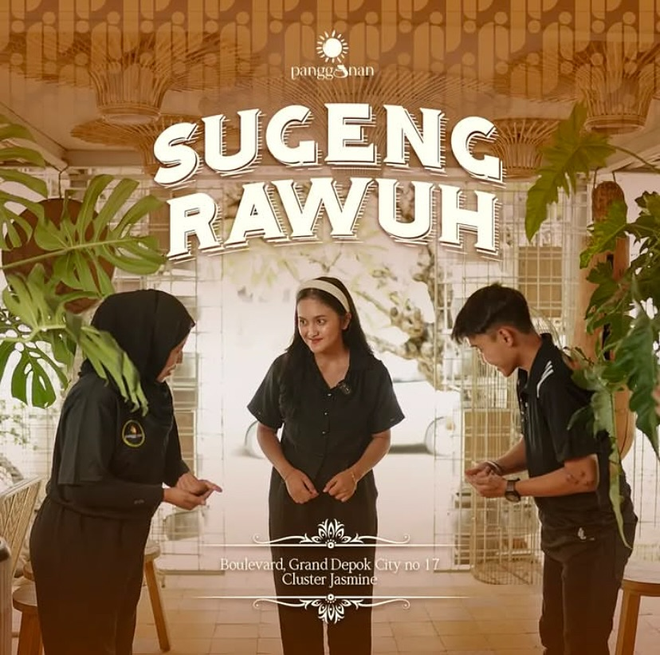
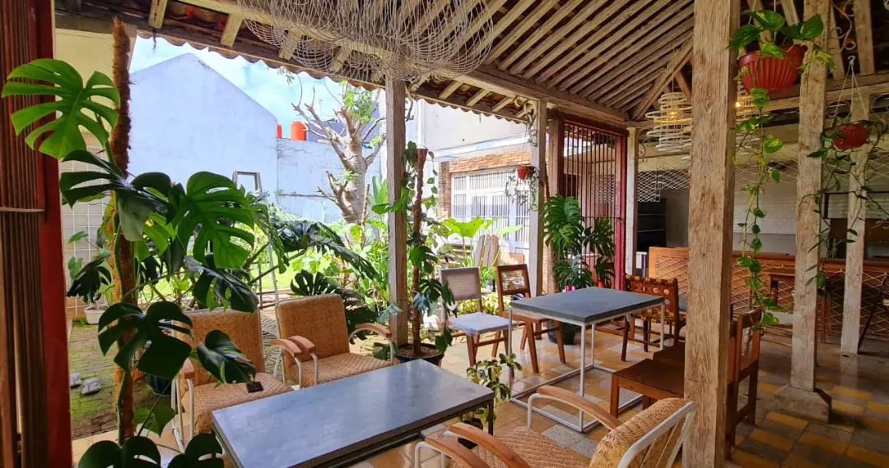
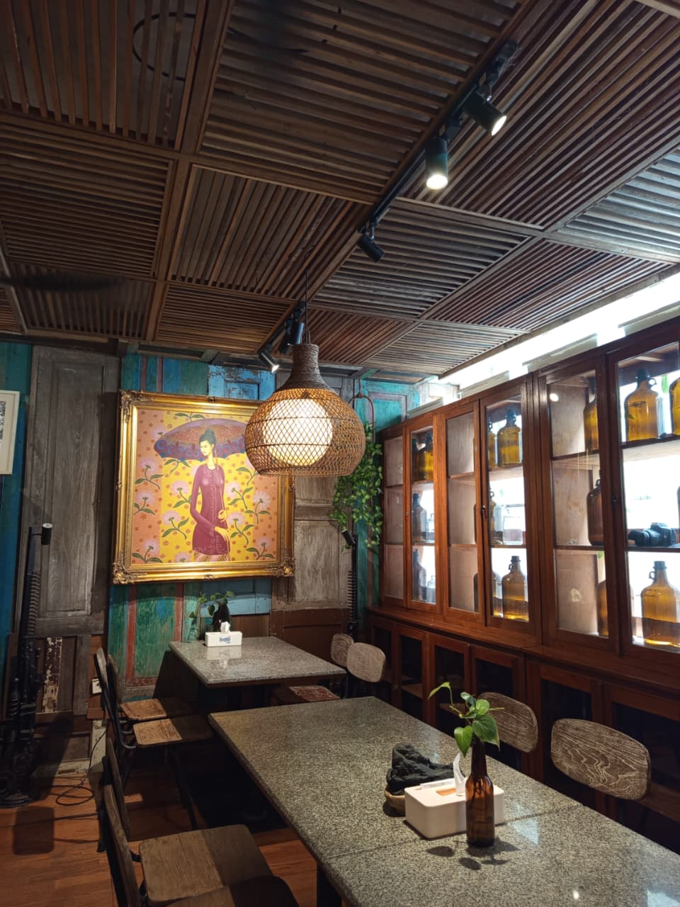
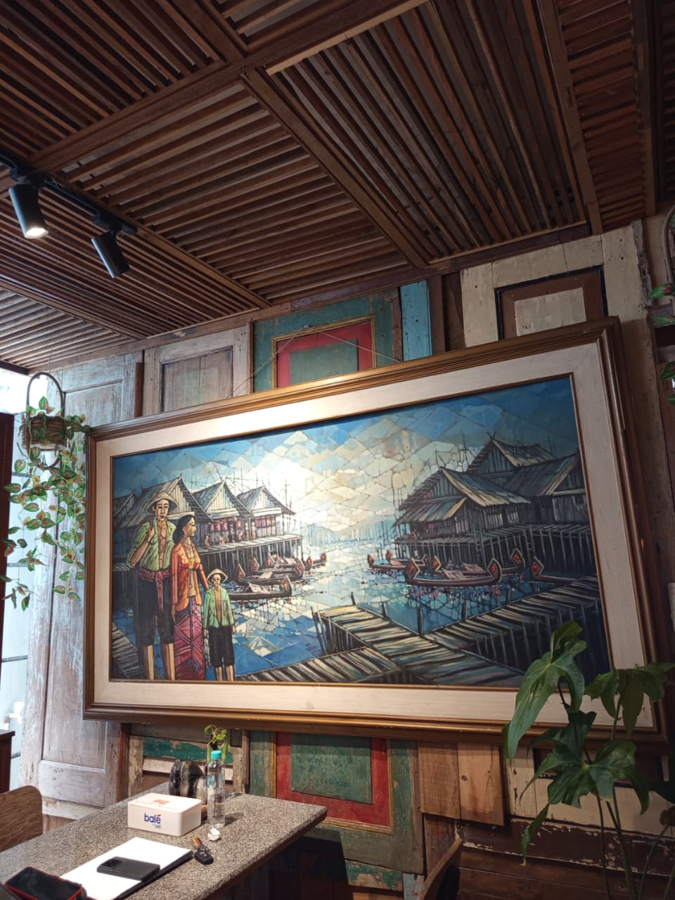
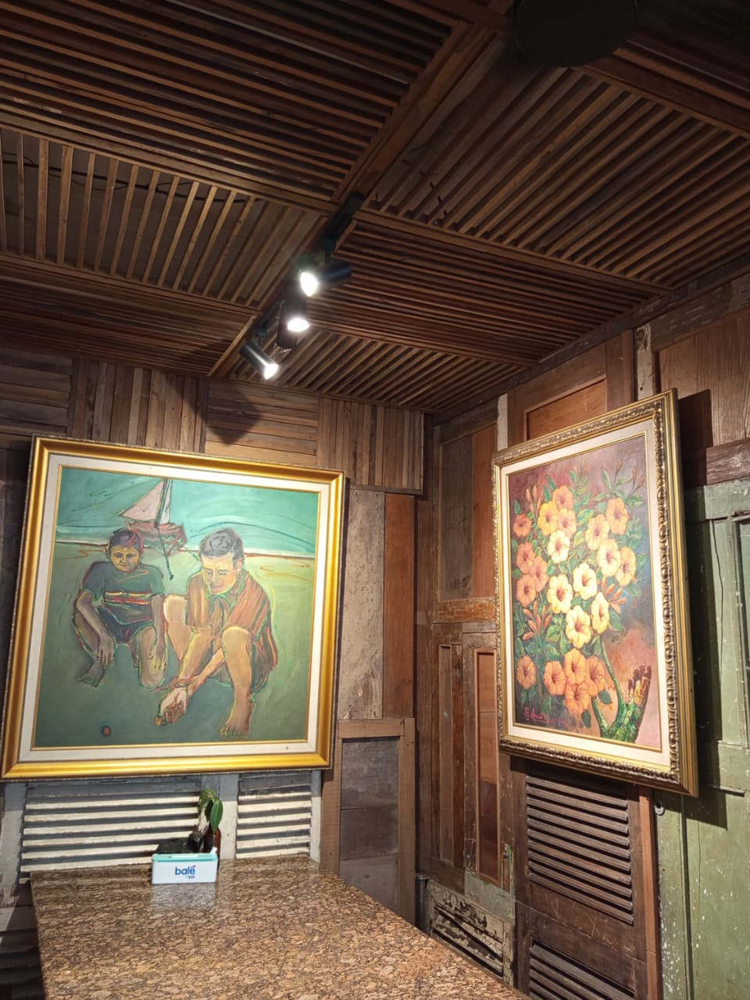
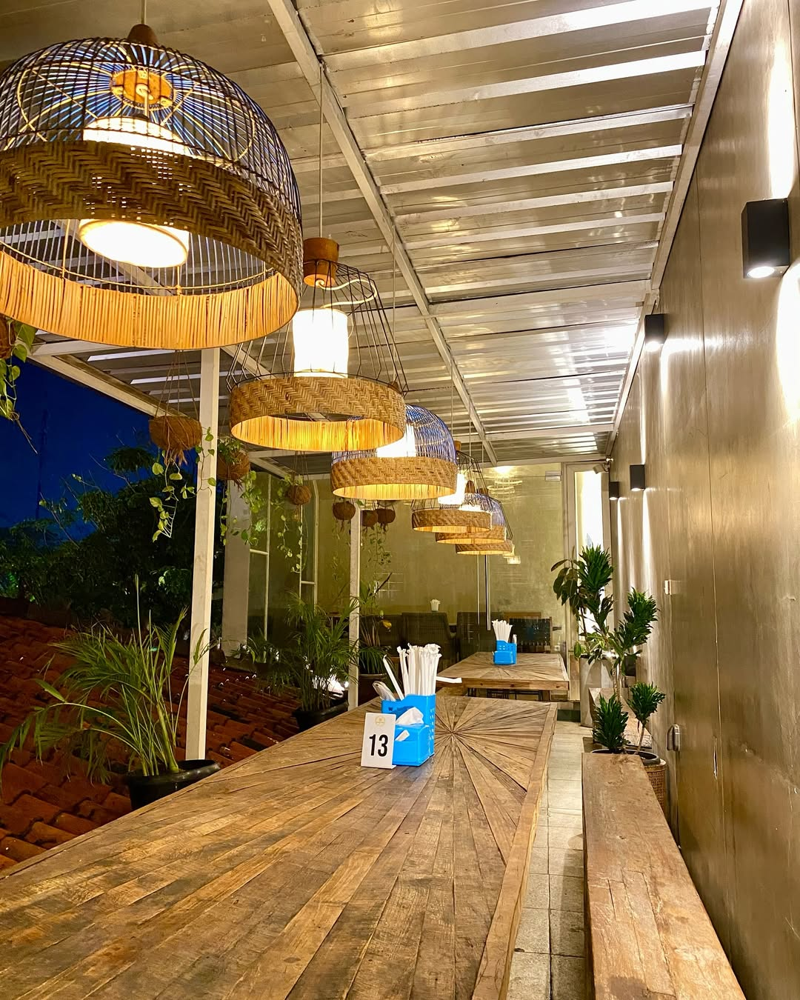
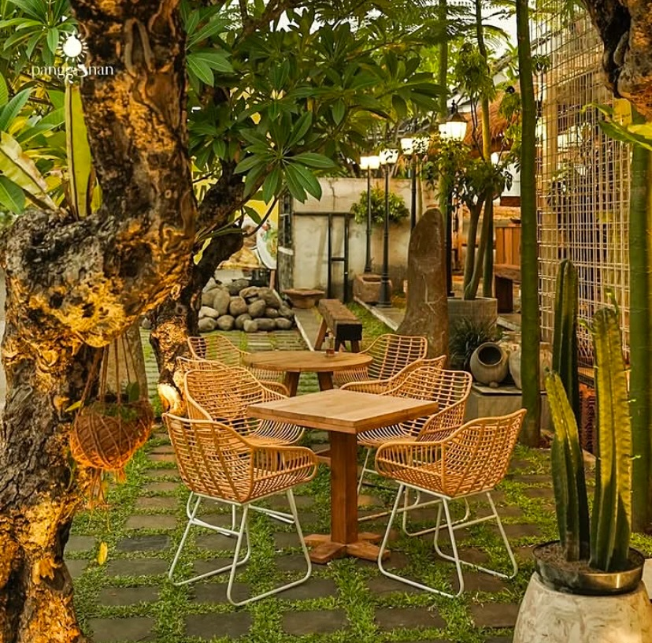
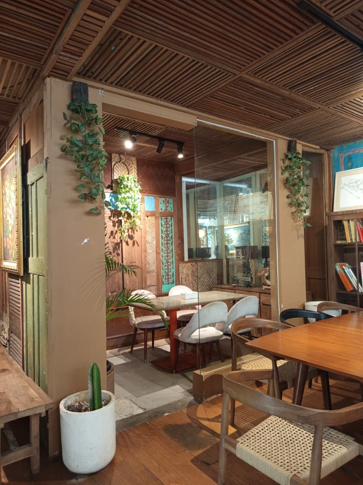

Kadang kita bingung membuang barang yang sudah tak terpakai. Tapi dengan ide kreatif, barang vintage berkarakter itu mendaur suasana pelataran menjadi sangat "hommy". Apalagi dipadukan menu daerah dengan resep juara, rasanya merugi jika tidak mampir!


Menikmati sajian pagi dengan semangkuk Soto di Panggonan.. Beauhh.. Ademnya sampa ke jiwa. Bakal makin mantap kalau mengajak teman & keluarga berkunjung lagi!
Desainnya memancarkan magis yang begitu kuat! Ornamen usang seakan mengajak kita berdialog dengan memori. Sungguh tempat yang benar-benar membumi dan inspiratif.
Makan aestetic dan lezat di GDC? Kesini aja ke Panggonan.. Lokasinya dekat banget sama alun-alun Depok. Kalau soal rasa jangan ditanya lagi, authentic banget, uenakkk puolll!

Sajian kulinernya sungguh memanjakan seluruh indra, menyatu apik dengan alunan mendayu yang mengalir sampai ujung meja kayu antik. Spektakuler!
Destinasi pelarian sempurna di akhir pekan saat lelah dengan dunia yang terlalu bising untuk diredam. Nyaman bagaikan menyusup ke pelukan nenek.
Tidak cuma singgah semata untuk mengisi perut yang lapar. Di pintu masuk saja jiwa ini rasanya sudah disapa dengan suguhan visual setaraf instalasi karya seni mahal!
Saya sudah bertahun-tahun berkutat di dunia arsitektur, namun perhatian pada detail dan kualitas kerajinan tangan di Panggonan sungguh tiada duanya. Sempurna di setiap sudutnya.

Kami mengadakan jamuan keluarga besar di Panggonan, dan tim mereka melampaui segala ekspektasi kami. Mereka sangat jeli pada kebutuhan acara serta menyajikan standar yang luar biasa.


